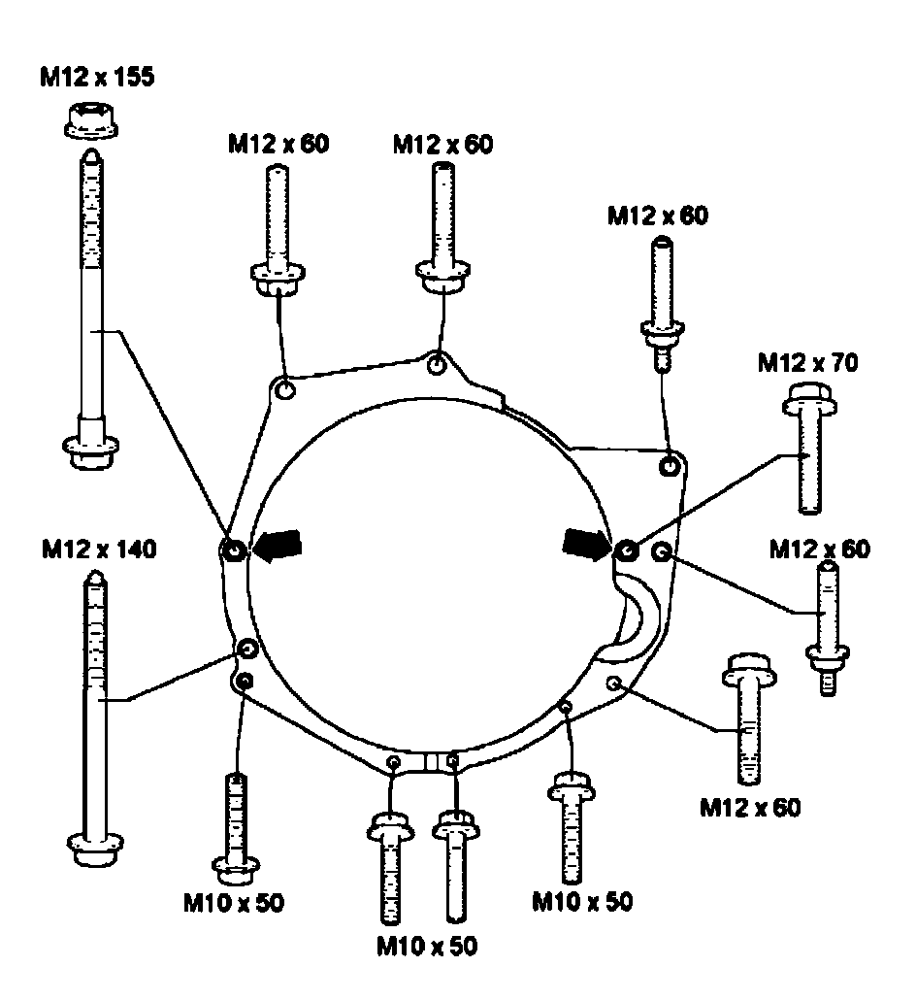
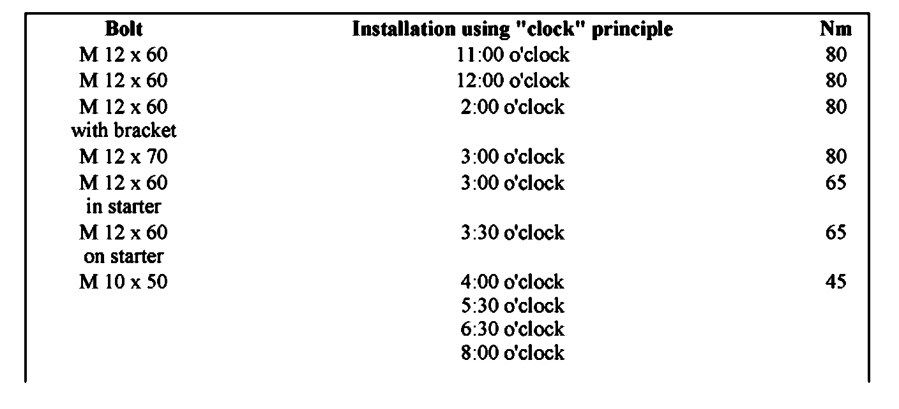
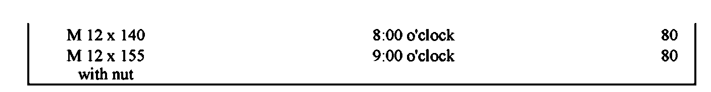
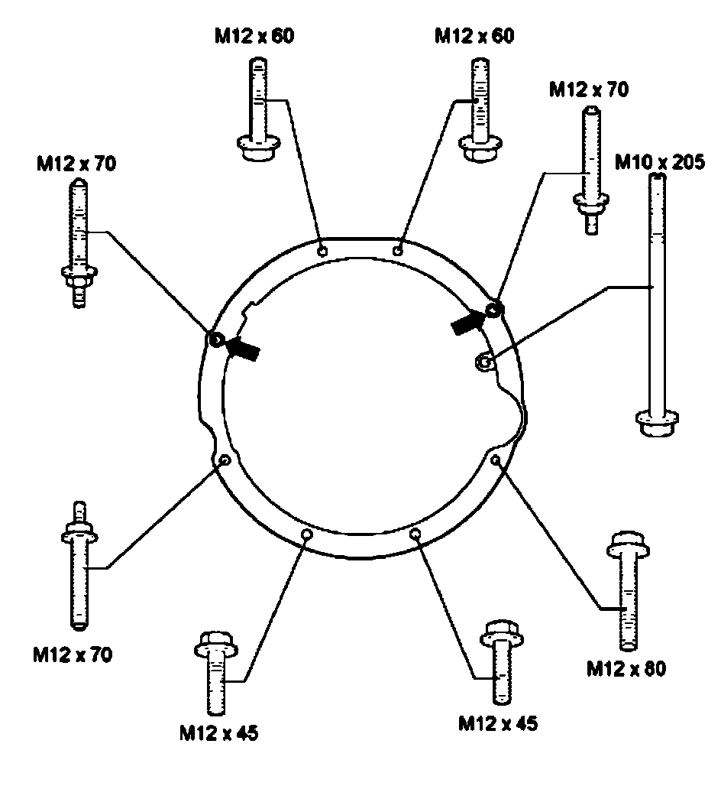
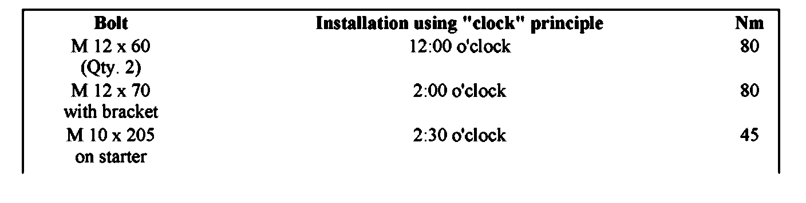
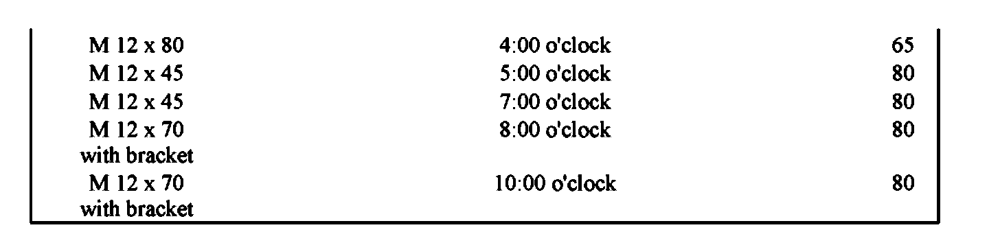
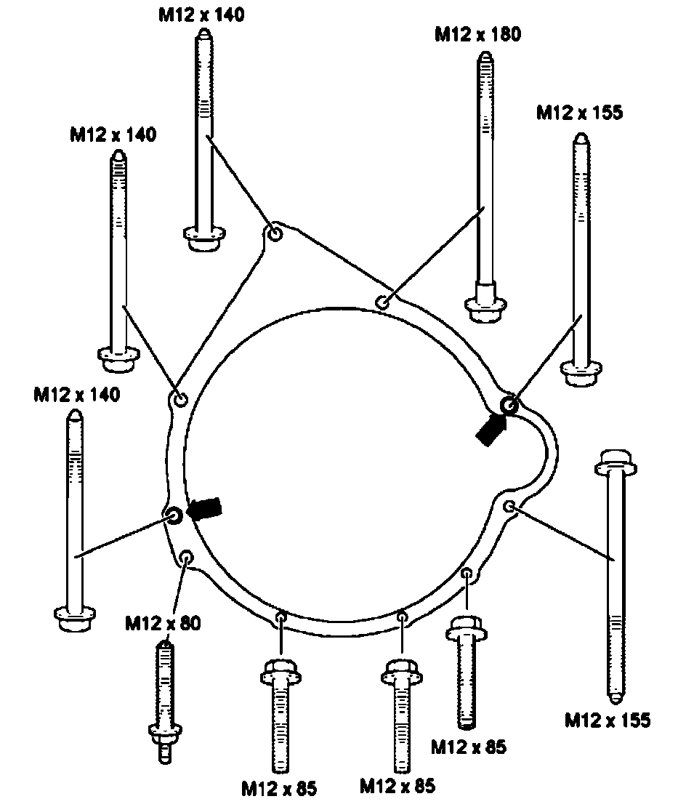
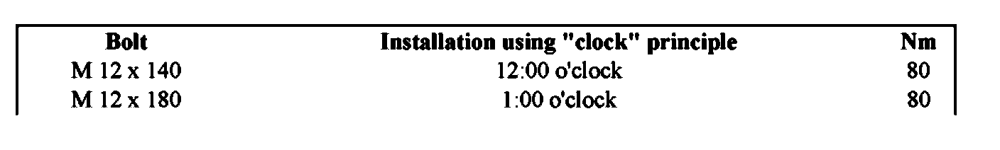
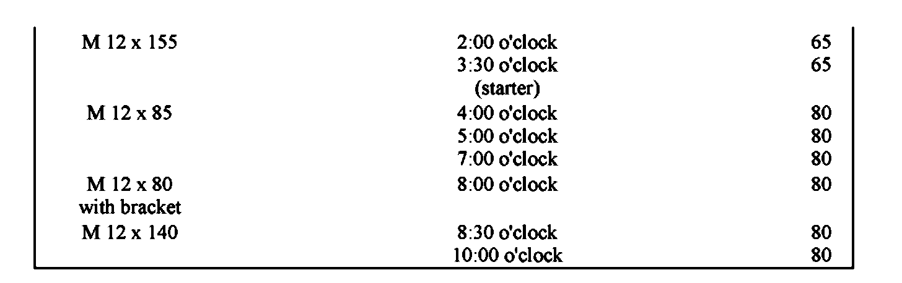
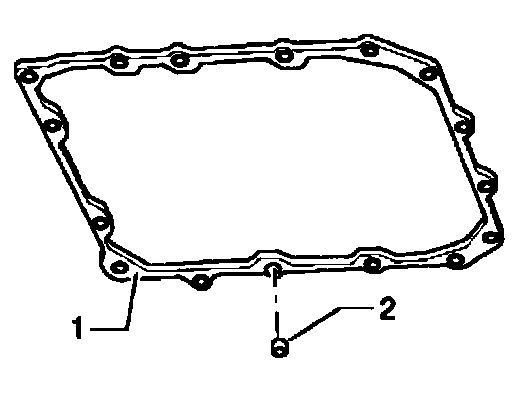

Torque Specifications
Tightening torquesVehicles with V6 engine


Dowel sleeves - arrows -
Drive plate to torque converter: 85 Nm

Vehicles with V8 gasoline engine

Dowel sleeves - arrows -

Drive plate to torque converter: 85 Nm


Vehicles with V10 diesel engine

Dowel sleeves - arrows -

Drive plate to torque converter: 60 Nm

Transmission Pan Torque & Sequence
Tighten oil pan bolts in diagonal sequence and in stages.
Tightening torques
Oil pan bolts 8 Nm